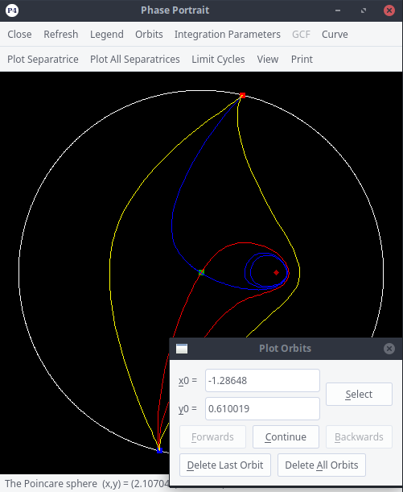

In this window you will be allowed to draw any orbit you wish by
simply clicking on the starting point and the direction you wish to integrate.
Once you are inside this window you simply need to click with the left button of
your mouse anywhere inside the Poincare(-Lyapunov) Disc or the Real Plane
(depending which Plot window you have).
-
The button will integrate the point selected in the
positive direction of time. The integration will last the number of steps defined
by the input line
 in the
Parameters of Integration window. After the
integration this button will turn unactive but you will be able
to continue integrating the same orbit in the same direction with the button
or integrate it backwards with the button
. If you want to start integrating in a different
point, you simply need to select it and the window will reconfigure again.
in the
Parameters of Integration window. After the
integration this button will turn unactive but you will be able
to continue integrating the same orbit in the same direction with the button
or integrate it backwards with the button
. If you want to start integrating in a different
point, you simply need to select it and the window will reconfigure again.
-
The button will erase the last orbit you draw.
Sometimes, this will cause the plot image to be a little bit distorted. If necessary,
press the
 button in the plot window to redraw the plot.
button in the plot window to redraw the plot.
-
The button will erase all orbits you have drawn.
-
The button is used after you manually enter the coordinates
of the initial integration point (x0,y0).
-
A typical view of a plot window after plotting orbits:

In order to conveniently integrate orbits, some keyboard shortcuts have been introduced when the plot window (or zoom window) is the active window:
-
F: integrate orbit forward in time. This key is active after you click an initial point in the phase plane.
-
B: integrate orbit backward in time. This key is active after you click an initial point in the phase plane.
-
C: continue forward or backward integration. This key is active after you pressed F or B.
-
Alt+D: delete last orbit.
-
Alt+A: delete all orbits.
Note: Sometimes it may seem that P4 refuses to assign a point as initial point after you click in the phase plane. This could be caused by the fact that the Limit Cycles window is open.
In such a case, a mouse click has a different purpose.
The integration will be performed according to the settings specified in the Parameters of Integration window: if you want to change the stepsize, the accuracy etc, then you have to do so that window.
 Back to the main page
Back to the main page
 Back to the windows page
Back to the windows page